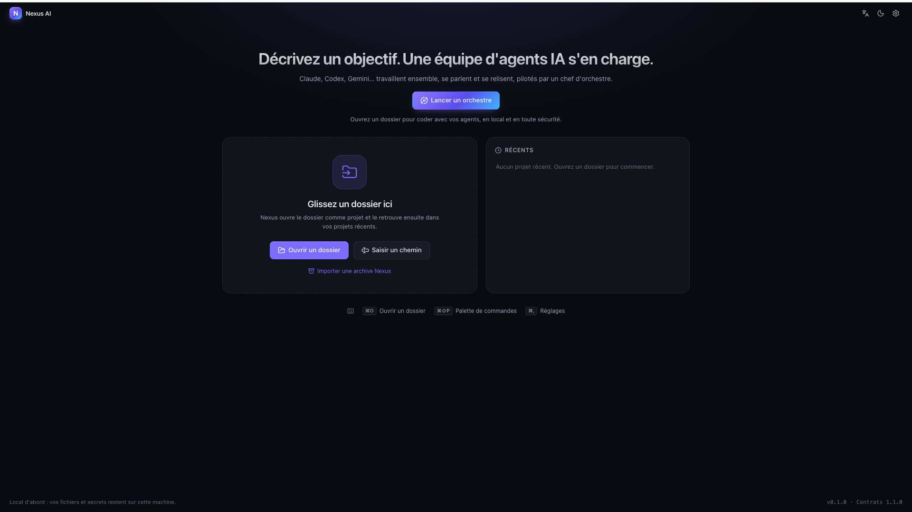

Nexus AI, orchestrateur d'agents de codage
Une plateforme de bureau local-first pour orchestrer des agents de codage IA avec des flux de travail sécurisés, observables et persistants.
- Problème
- Les outils multi-agents font tourner les agents côte à côte, sans vraie collaboration ni contrôle humain.
- Fonctionnalités
- Chef d'orchestre qui découpe un objectif en graphe de tâches, agents en parallèle sur une copie isolée du projet, messagerie entre agents, revues avant fusion, sandbox Linux, validation humaine du plan et de la fusion.
- Mon rôle
- Projet en binôme avec Sekou Dahifourou KEITA. Je suis responsable qualité et tests.
- Résultat
- Version préliminaire 0.1.0, open source (Apache 2.0).
